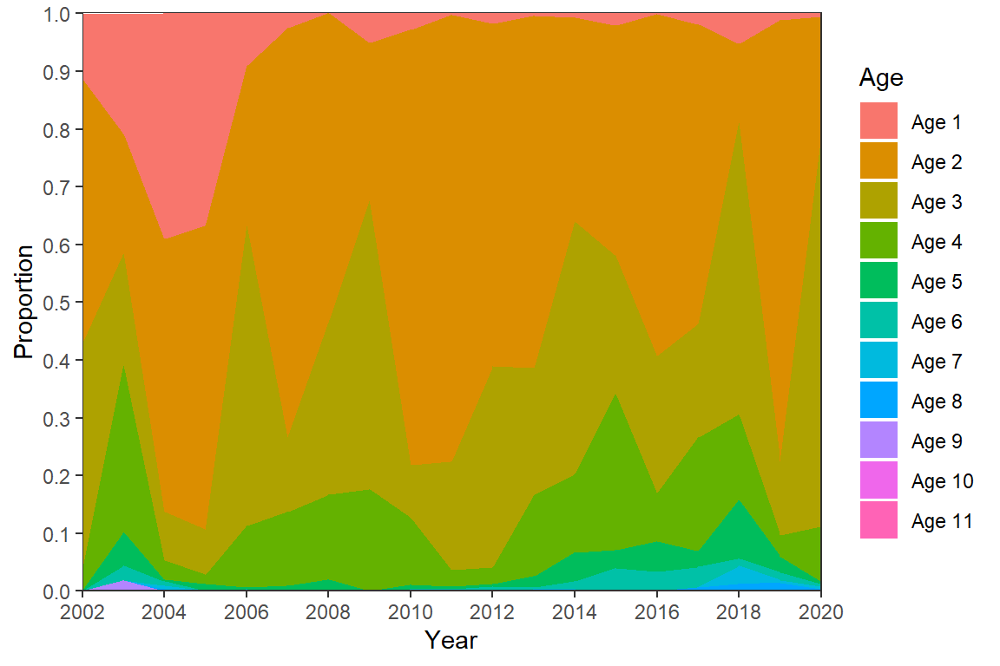
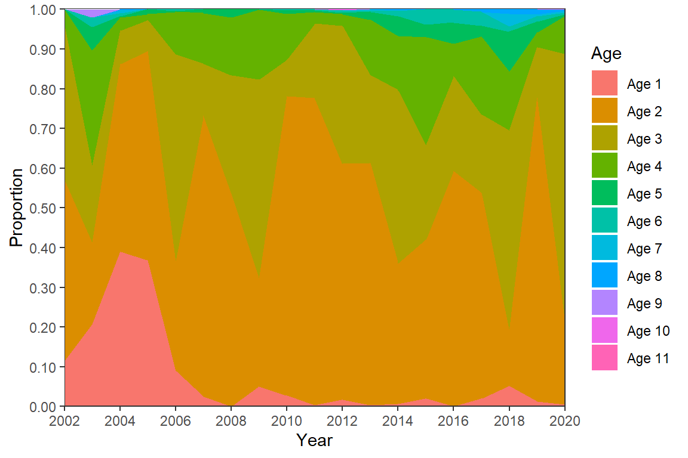
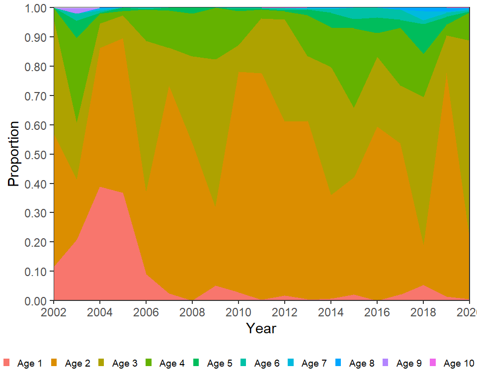
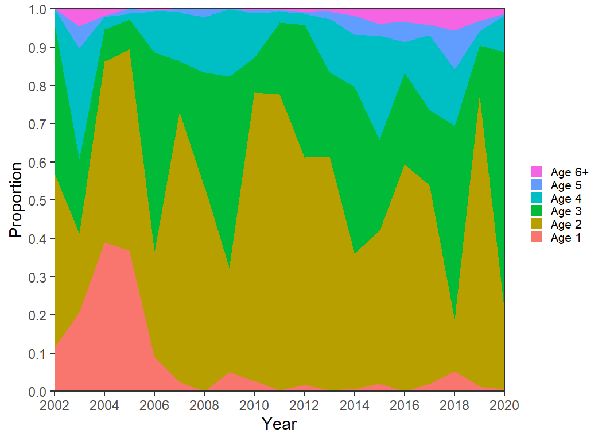
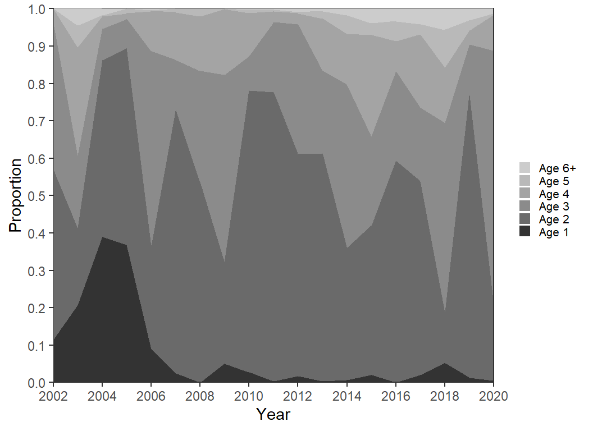
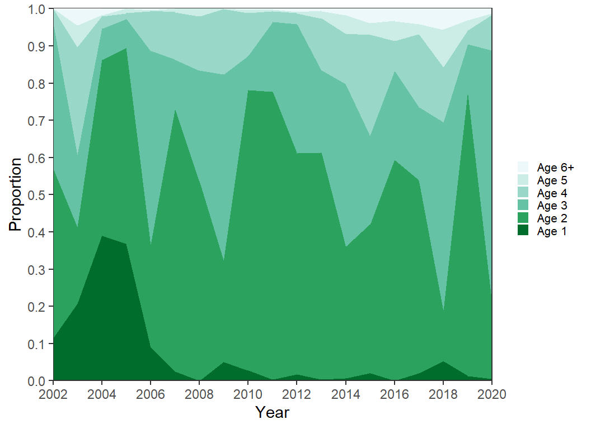
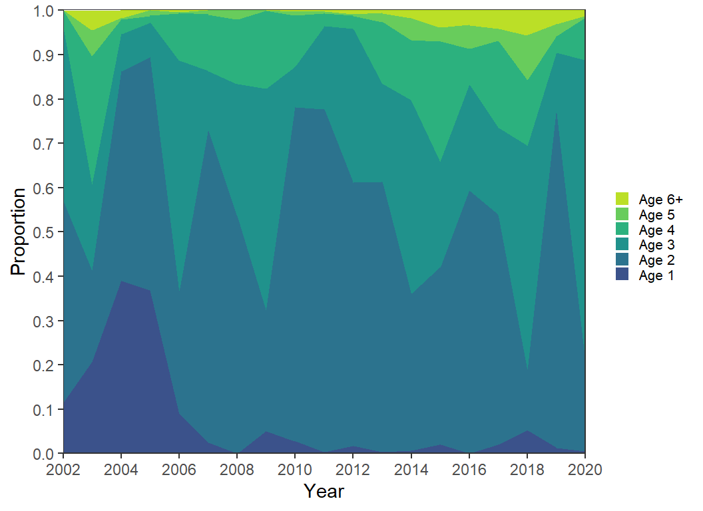
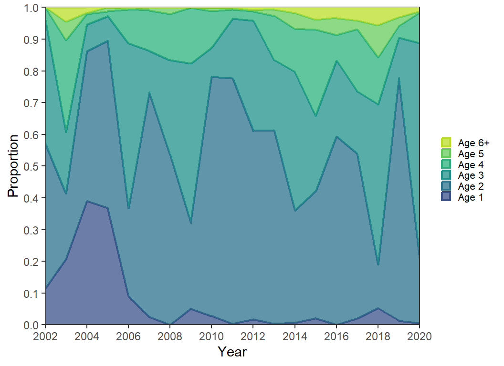
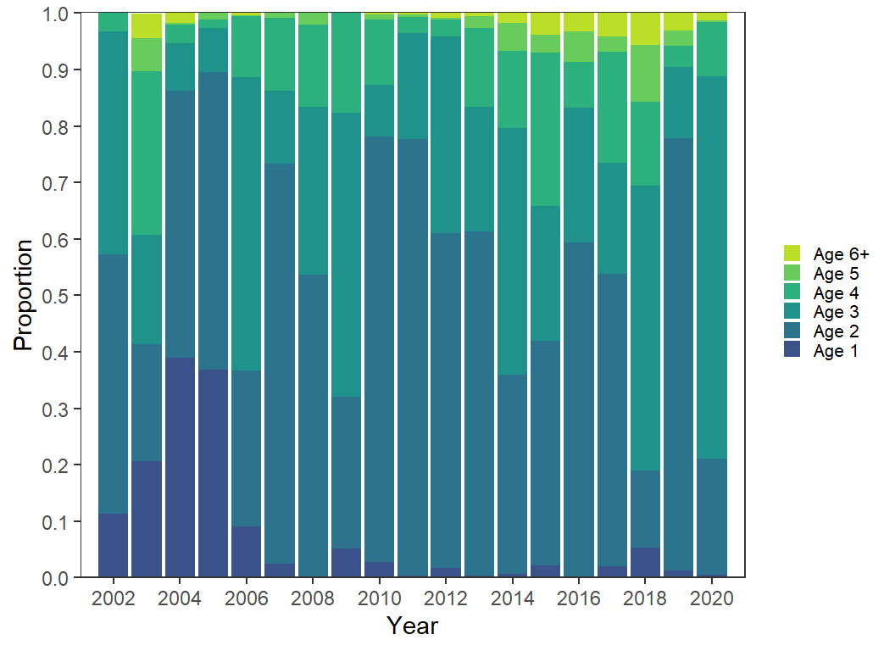
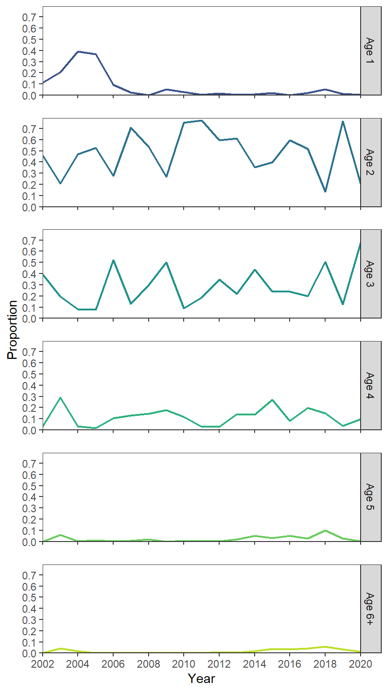

library(tidyverse) # for dplyr, ggplot2 packages
Series Note
This is the fourth of several posts related to McCarrick et al. (2022).
Introduction
McCarrick et al. (2022) examined the population dynamics of Yellowstone Cutthroat Trout (Oncorhynchus clarkii bouvieri) in Henrys Lake, Idaho over a nearly two decade period. Their Figure 5 showed the relative age composition of Cutthroat Trout across years. I use ggplot2 to recreate that figure here.
The following packages are loaded for use below. A few functions from each of FSA, plyr, lemon, and forcats are used with :: such that the entire packages are not attached here.
Data Wrangling
McCarrick et al. (2022) provided raw data for Figure 2 in a MSWord table as a supplement. I copied the table from Word, pasted it into Excel, and saved it for loading here.
dat <- readxl::read_xlsx("YCT_AgeComp.xlsx")
dat#R| # A tibble: 19 × 12
#R| Year `Age 1` `Age 2` `Age 3` `Age 4` `Age 5` `Age 6` `Age 7` `Age 8` `Age 9`
#R| <dbl> <dbl> <dbl> <dbl> <dbl> <dbl> <dbl> <dbl> <dbl> <dbl>
#R| 1 2002 0.113 0.46 0.394 0.034 0 0 0 0 0
#R| 2 2003 0.207 0.207 0.194 0.289 0.058 0.025 0 0 0.019
#R| 3 2004 0.39 0.472 0.084 0.034 0.003 0.007 0.007 0.003 0
#R| 4 2005 0.368 0.527 0.078 0.015 0.013 0 0 0 0
#R| 5 2006 0.091 0.276 0.52 0.107 0.002 0.004 0 0 0
#R| 6 2007 0.025 0.708 0.13 0.128 0.009 0 0 0 0
#R| 7 2008 0 0.536 0.298 0.146 0.021 0 0 0 0
#R| 8 2009 0.051 0.27 0.502 0.177 0 0 0 0 0
#R| 9 2010 0.028 0.753 0.092 0.116 0.008 0.003 0 0 0
#R| 10 2011 0.003 0.774 0.187 0.029 0.005 0.003 0 0 0
#R| 11 2012 0.017 0.594 0.348 0.029 0.004 0.006 0 0 0
#R| 12 2013 0.004 0.61 0.22 0.14 0.02 0.002 0.004 0 0
#R| 13 2014 0.007 0.353 0.437 0.136 0.05 0.013 0.002 0.002 0
#R| 14 2015 0.021 0.399 0.239 0.271 0.031 0.04 0 0 0
#R| 15 2016 0 0.594 0.238 0.082 0.053 0.033 0 0 0
#R| 16 2017 0.02 0.518 0.197 0.197 0.027 0.035 0 0.007 0
#R| 17 2018 0.053 0.137 0.505 0.148 0.101 0.013 0.031 0.013 0
#R| 18 2019 0.013 0.765 0.127 0.037 0.027 0.014 0.004 0.013 0
#R| 19 2020 0.005 0.206 0.677 0.096 0.003 0.005 0.005 0.002 0
#R| # … with 2 more variables: `Age 10` <dbl>, `Age 11` <dbl>The data were provided in a wide format that needs to be “tidied” to a long format with the proportions at age in the Age X columns stacked on top of each other with a corresponding variable that indicates the age. Note that the columns to pivot in cols= were selected by ignoring year and, thus, leaving all of the Age X columns.1
1 The columns also could have been selected with starts_with("Age"), among other possibilities.
dat <- dat |>
pivot_longer(cols=-Year,names_to="Age",values_to="Proportion")
FSA::headtail(dat)#R| Year Age Proportion
#R| 1 2002 Age 1 0.113
#R| 2 2002 Age 2 0.460
#R| 3 2002 Age 3 0.394
#R| 207 2020 Age 9 0.000
#R| 208 2020 Age 10 0.001
#R| 209 2020 Age 11 0.000The Age variable should be converted to a factor so that the levels can be controlled, otherwise “Age 10” will follow “Age 1”.
dat <- dat |>
mutate(Age=factor(Age,levels=c("Age 1","Age 2","Age 3","Age 4","Age 5","Age 6",
"Age 7","Age 8","Age 9","Age 10","Age 11")))This data frame is ready for recreating Figure 5.
Recreating Figure 5
Figure 5 is an “area plot” which is easily constructed in ggplot2 with geom_area(), with the variable that defines the colored areas (i.e., Age) mapped to fill=.2
2 I plotted every other on the x-axis as the font needed to be so small to show every year at in McCarrick et al. (2022).
ggplot(data=dat,mapping=aes(x=Year,y=Proportion,fill=Age)) +
geom_area() +
scale_y_continuous(expand=expansion(mult=0),
breaks=scales::breaks_width(0.1)) +
scale_x_continuous(expand=expansion(mult=0),
limits=c(2002,2020),breaks=scales::breaks_width(2)) +
theme_bw() +
theme(panel.grid=element_blank())
I won’t address color here (but see further below) as these colors are no uglier than what is shown in the published Figure 5. However, there are other adjustments that need to be made to match Figure 5.
First, the ages above are stacked opposite of what is in Figure 5; i.e., age-1 is at the top, age-2 below that, etc. rather than age-1 at the bottom, age-2 on top of that, etc. The order of stacking is reversed with position= in geom_area() as shown below. Second, the authors included two digits for the values on the y-axis for some reason. Assuming this behavior is desired it can be obtained with scales::label_number() in scale_y_continuous() as shown below.3
3 This was demonstrated in this post.
ggplot(data=dat,mapping=aes(x=Year,y=Proportion,fill=Age)) +
geom_area(position=position_stack(reverse=TRUE)) +
scale_y_continuous(expand=expansion(mult=0),
breaks=scales::breaks_width(0.1),
label=scales::label_number(0.01)) +
scale_x_continuous(expand=expansion(mult=0),
limits=c(2002,2020),breaks=scales::breaks_width(2)) +
theme_bw() +
theme(panel.grid=element_blank())
Third, the legend needs to be moved to below the x-axis. This is easily accomplished with legend.position="bottom" in theme(). However, doing this alone shows the legend in three rows. One row was used for the legend as shown below with guides(). Finally, other theme options were altered to remove the legend title and make the legend symbols and text smaller.
ggplot(data=dat,mapping=aes(x=Year,y=Proportion,fill=Age)) +
geom_area(position=position_stack(reverse=TRUE)) +
scale_y_continuous(expand=expansion(mult=0),
breaks=scales::breaks_width(0.1),
label=scales::label_number(0.01)) +
scale_x_continuous(expand=expansion(mult=0),
limits=c(2002,2020),breaks=scales::breaks_width(2)) +
guides(fill=guide_legend(nrow=1)) +
theme_bw() +
theme(panel.grid=element_blank(),
legend.position="bottom",
legend.title=element_blank(),
legend.key.size=unit(2,"mm"),
legend.text=element_text(size=7))
This largely recreates Figure 5 in McCarrick et al. (2022).
Possible Modifications
Area plots are notorious for being difficult for readers to interpret.4 Below I offer some modifications that may(?) aid interpretation.
4 See this for example.
Lump Ages
Many potential ages are shown in Figure 5 though ages greater than age-5 are rarely visible (or noticeable) as they never represent more than 10% in total or 4% individually of the fish in any given year.
# Find maximum proportion by age, is that more than 5%
dat |> group_by(Age) |> summarize(maxP=max(Proportion))#R| # A tibble: 11 × 2
#R| Age maxP
#R| <fct> <dbl>
#R| 1 Age 1 0.39
#R| 2 Age 2 0.774
#R| 3 Age 3 0.677
#R| 4 Age 4 0.289
#R| 5 Age 5 0.101
#R| 6 Age 6 0.04
#R| 7 Age 7 0.031
#R| 8 Age 8 0.013
#R| 9 Age 9 0.019
#R| 10 Age 10 0.002
#R| 11 Age 11 0.001The number of colors used in the plot, and the number of areas that the reader looks for, can be reduced by lumping together ages that are not well-represented in the data. Below fct_collapse() from forcats is used to collapse the “Age 6” to “Age 11” levels in Age to one level called “Age 6+”. To preserve the original data this data frame was called dat2.
dat2 <- dat |>
mutate(Age=forcats::fct_collapse(Age,`Age 6+`=c("Age 6","Age 7","Age 7","Age 8",
"Age 9","Age 10","Age 11")))
FSA::headtail(dat2)#R| Year Age Proportion
#R| 1 2002 Age 1 0.113
#R| 2 2002 Age 2 0.460
#R| 3 2002 Age 3 0.394
#R| 207 2020 Age 6+ 0.000
#R| 208 2020 Age 6+ 0.001
#R| 209 2020 Age 6+ 0.000However, “Age 6+” was simply repeated for the original “Age 6”, “Age 7”, etc. The proportions for these ages should be summed, within each year, to get a proper proportion of “Age 6+” fish.5
5 Summing the proportions for the ages that were lumped will just return the proportion for those ages.
dat2 <- dat2 |>
group_by(Year,Age) |>
summarize(Proportion=sum(Proportion)) |>
ungroup()
FSA::headtail(dat2)#R| Year Age Proportion
#R| 1 2002 Age 1 0.113
#R| 2 2002 Age 2 0.460
#R| 3 2002 Age 3 0.394
#R| 112 2020 Age 4 0.096
#R| 113 2020 Age 5 0.003
#R| 114 2020 Age 6+ 0.013To save some typing below, I set the theme to the theme items above with the exception that I moved the legend back to the right where I think it is more appropriate.
theme_set(
theme_bw() +
theme(panel.grid=element_blank(),
legend.title=element_blank(),
legend.key.size=unit(3,"mm"),
legend.text=element_text(size=8))
)The code for Figure 5 is largely repeated below with these data. However, I reversed the order of the labels in the legend with guides() so that the labels more naturally followed how the areas were plotted and I removed the unnecessary extra digit in the y-axis labels.
ggplot(data=dat2,mapping=aes(x=Year,y=Proportion,fill=Age)) +
geom_area(position=position_stack(reverse=TRUE)) +
scale_y_continuous(expand=expansion(mult=0),
breaks=scales::breaks_width(0.1)) +
scale_x_continuous(expand=expansion(mult=0),
limits=c(2002,2020),breaks=scales::breaks_width(2)) +
guides(fill=guide_legend(reverse=TRUE))
Color
Changing the color is not necessarily going to make the figure easier to interpret. However, a gradient of color can be used to more clearly represent the gradient of age. Here, I form a gradient of grays with scale_fill_grey().
ggplot(data=dat2,mapping=aes(x=Year,y=Proportion,fill=Age)) +
geom_area(position=position_stack(reverse=TRUE)) +
scale_y_continuous(expand=expansion(mult=0),
breaks=scales::breaks_width(0.1)) +
scale_x_continuous(expand=expansion(mult=0),
limits=c(2002,2020),breaks=scales::breaks_width(2)) +
scale_fill_grey(start=0.2,end=0.8) +
guides(fill=guide_legend(reverse=TRUE))
A sequential palette that ranges from dark green to light blue is used below with scale_fill_brewer(). A variety of palettes may be chosen in this function as described in its documentation. Note that direction=-1 was used here to reverse the palette order as I preferred the darker colors for age-1 and the lighter colors for age-6+.
ggplot(data=dat2,mapping=aes(x=Year,y=Proportion,fill=Age)) +
geom_area(position=position_stack(reverse=TRUE)) +
scale_y_continuous(expand=expansion(mult=0),
breaks=scales::breaks_width(0.1)) +
scale_x_continuous(expand=expansion(mult=0),
limits=c(2002,2020),breaks=scales::breaks_width(2)) +
scale_fill_brewer(palette="BuGn",direction=-1) +
guides(fill=guide_legend(reverse=TRUE))
Other palette algorithms can also be used. Below, scale_fill_viridis_d() is used as an example.
ggplot(data=dat2,mapping=aes(x=Year,y=Proportion,fill=Age)) +
geom_area(position=position_stack(reverse=TRUE)) +
scale_y_continuous(expand=expansion(mult=0),
breaks=scales::breaks_width(0.1)) +
scale_x_continuous(expand=expansion(mult=0),
limits=c(2002,2020),breaks=scales::breaks_width(2)) +
scale_fill_viridis_d(begin=0.25,end=0.9) +
guides(fill=guide_legend(reverse=TRUE))
Tip
There is both an art and a science behind choosing colors for plots. Unfortunately, I am not strong nor fully knowledgeable in either. Thus, I show how to alter colors here, but I don’t claim that these choices are ideal.
Add Lines
I sometimes feel that the colors in area plots “run together” in my eyes. One way to make more clear “breaks” is to highlight the color changes. Below I also map Age to color=, use scale_color_viridis_d() with the same options as scale_fill_viridis_d(), except that for the fill I set a slight transparency with alpha=. Here color= is used for the boundaries of the areas and since the fill was made transparent these boundaries are a bit darker and, thus, appear as lines between the areas. Further note that both fill= and color= had to be “reversed” in guides().
ggplot(data=dat2,mapping=aes(x=Year,y=Proportion,fill=Age,color=Age)) +
geom_area(position=position_stack(reverse=TRUE),linewidth=0.75) +
scale_y_continuous(expand=expansion(mult=0),
breaks=scales::breaks_width(0.1)) +
scale_x_continuous(expand=expansion(mult=0),
limits=c(2002,2020),breaks=scales::breaks_width(2)) +
scale_color_viridis_d(begin=0.25,end=0.9) +
scale_fill_viridis_d(begin=0.25,end=0.9,alpha=0.75) +
guides(fill=guide_legend(reverse=TRUE),
color=guide_legend(reverse=TRUE))
Bar Chart
Most people that eschew the use of area plots suggests using bar charts instead. This is easily accomplished here by replacing geom_area() with geom_col(). However, the limits of the x-axis will need to be extended by one year on both sides so that the first and last year will be shown correctly.
ggplot(data=dat2,mapping=aes(x=Year,y=Proportion,fill=Age)) +
geom_col(position=position_stack(reverse=TRUE)) +
scale_y_continuous(expand=expansion(mult=0),
breaks=scales::breaks_width(0.1)) +
scale_x_continuous(expand=expansion(mult=0),
limits=c(2001,2021),breaks=scales::breaks_width(2)) +
scale_fill_viridis_d(begin=0.25,end=0.9) +
guides(fill=guide_legend(reverse=TRUE))
Facets
Finally, I think that if the goal is to show annular trends for the specific ages, that they should be plotted as lines for each age. Here lines are used with geom_line() and faceting was used on Age. The use of color is superfluous here, but I kept it for comparing with the previous options.
ggplot(data=dat2,mapping=aes(x=Year,y=Proportion,color=Age)) +
geom_line(linewidth=0.75) +
scale_y_continuous(expand=expansion(mult=c(0,0.025)),
breaks=scales::breaks_width(0.1)) +
scale_x_continuous(expand=expansion(mult=0),
limits=c(2002,2020),breaks=scales::breaks_width(2)) +
scale_color_viridis_d(begin=0.25,end=0.9) +
lemon::facet_rep_wrap(vars(Age),ncol=1,strip.position="right") +
theme(legend.position="none")
In my view, it is much easier to decipher what is going on with age-2 to age-4 fish from this plot.
References
McCarrick, D. K., J. C. Dillon, B. High, and M. C. Quist. 2022. Population dynamics of Yellowstone Cutthroat Trout in Henrys Lake, Idaho. Journal of Fish and Wildlife Management 13(1):169–181.
Reuse
Citation
BibTeX citation:
@online{h. ogle2023,
author = {H. Ogle, Derek},
title = {McCarrick Et Al. (2022) {Age} {Composition} {Plot}},
date = {2023-03-27},
url = {https://fishr-core-team.github.io/fishR//blog/posts/2023-3-27_McCarricketal2022_Fig5},
langid = {en}
}
For attribution, please cite this work as:
H. Ogle, D. 2023, March 27. McCarrick et al. (2022) Age Composition
Plot. https://fishr-core-team.github.io/fishR//blog/posts/2023-3-27_McCarricketal2022_Fig5.